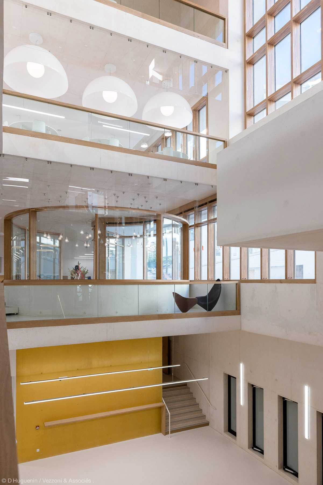
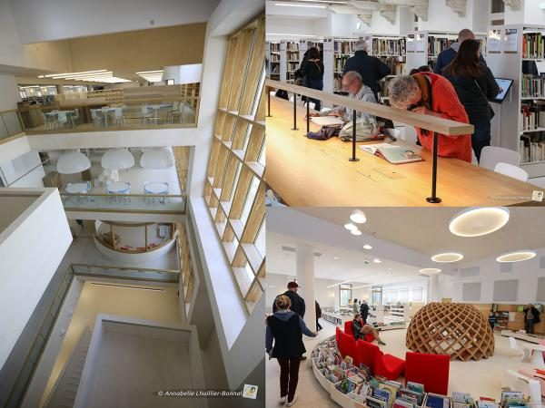
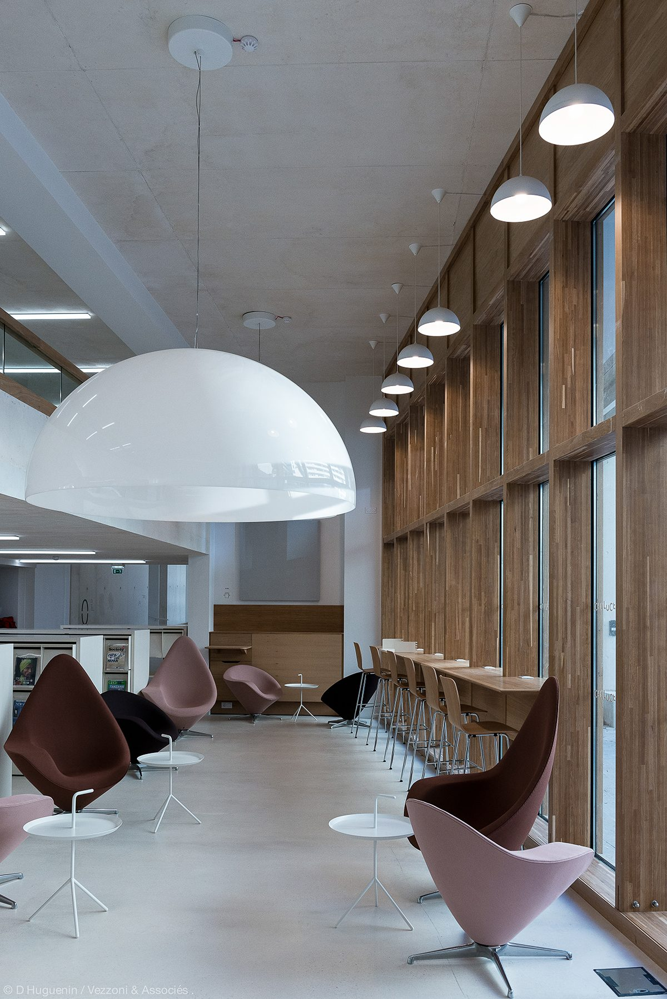
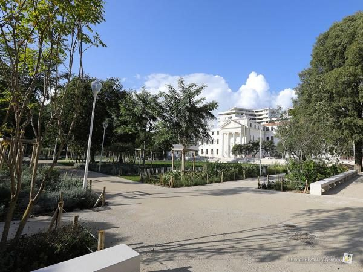
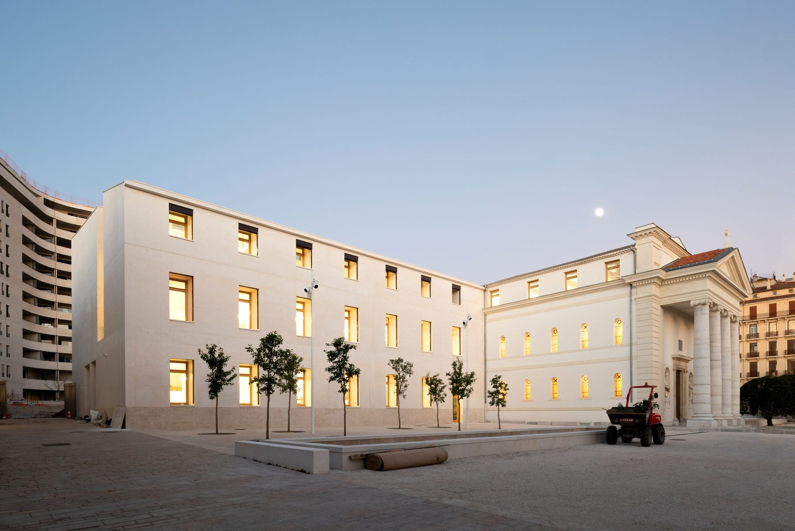

Toulon · Quartier de la Créativité et de la Connaissance
Médiathèque
Chalucet
Un troisième lieu au cœur de la ville, où le patrimoine hospitalier rencontre l’architecture contemporaine — et où l’on vient autant pour lire que pour rester.
Ouverte depuis janvier 2020 · 5 rue Chalucet
DécouvrirLe lieu
Une bibliothèque
qui se traverse
comme une ville
Sur les hauteurs du centre-ville, là où se dressait autrefois l’hôpital de la Charité, la médiathèque Chalucet occupe une ancienne friche hospitalière de 3,5 hectares devenue l’un des quartiers les plus vivants de Toulon.
Autour d’elle : l’École supérieure d’art et de design, Kedge Business School, l’école Camondo, un incubateur numérique, des logements, des bureaux — et le jardin Alexandre 1er, poumon vert de 20 000 m². La médiathèque est le point de rencontre de tout cela.
Conçue comme un third place à la française, elle ne se limite pas au prêt de documents : on y travaille, on y joue, on y regarde des films, on y écoute des conférences, on y boit un café face aux arbres.
« Un lieu où l’on entre pour un livre et où l’on reste pour l’atmosphère. »

L’atrium · un puits de lumière traversant les trois niveaux
Lire & emprunter
Livres, bandes dessinées, revues, CD et DVD pour tous les âges, en accès libre et empruntables.
Faire & apprendre
Autoformation, ateliers numériques, jeux vidéo, jeux de société, projections et conférences.
Se retrouver
Un café culturel ouvert sur le jardin, une bulle du conte, un auditorium, une chapelle d’exposition.
Architecte · 2020
Architecture
Le neuf épouse
l’ancien
Trois bâtiments sont inscrits à l’inventaire des monuments historiques : la chapelle et le pavillon d’entrée du XIXe siècle, ainsi que l’aile Est de l’ancien hospice, élevée au XVIIe.
Plutôt que de les isoler, le projet les remet au centre. Une aile neuve en béton blanc vient reconstituer la symétrie perdue — l’aile ouest ayant été détruite pendant la Seconde Guerre mondiale — et prolonge l’ordonnancement néoclassique dans une écriture résolument contemporaine.
D’un côté, la mémoire : pierre, chapelle, jardin historique. De l’autre, le mouvement : grandes baies, transparence, lumière méditerranéenne.
- XVIIeHôpital de la Charité, puis hospice Chalucet
- 1854Agrandissement et transformation en hôpital Chalucet
- 1944Destruction de l’aile ouest lors des bombardements
- 2015Concours d’urbanisme sur la friche de 3,5 ha
- 2020Ouverture de la médiathèque au public
Les espaces
Quatre niveaux,
mille façons d’y être
Le sous-sol
L’étage de la parole et du spectacle. Un auditorium accueille conférences, rencontres et projections, complété par un espace événementiel modulable.
- Auditorium
- Espace événementiel
- Conférences
- Rencontres

Le rez-de-chaussée
Le seuil, la lumière, la vie du quartier. On y trouve l’accueil et les actualités, un café culturel ouvert sur le jardin, l’espace petite enfance et les pratiques culturelles amateurs.
La chapelle restaurée devient l’espace d’exposition : un écrin de pierre pour les regards et les images.
- Accueil & actualités
- Café culturel
- Petite enfance
- Pratiques amateurs
- Chapelle · expositions
Le café culturel propose boissons et petite restauration, à consommer sur place ou en terrasse face au jardin.

Le premier étage
Le royaume des histoires. Bandes dessinées, DVD, romans et fiction, arts : les collections se déploient en libre accès, entre rayonnages et assises improvisées.
- Bande dessinée
- Cinéma · DVD
- Romans & fiction
- Arts
- Revues
Le deuxième étage
L’étage des écrans et des apprentissages : salle d’autoformation équipée de douze postes, espace jeux vidéo, Cinérama pour visionner des films, et les espaces de la médiathèque départementale du Var.
- Autoformation · 12 postes
- Jeux vidéo
- Cinérama
- Jeux de société
- Formation professionnelle
Ordinateurs en libre accès répartis sur tous les niveaux pour consulter le catalogue, le site des médiathèques ou naviguer sur Internet.


Informations pratiques
Venir,
revenir, rester
L’entrée est libre et gratuite. L’emprunt de documents est ouvert à tous les inscrits du réseau des médiathèques de Toulon.
- LundiFermé
- Mardi10h00 – 18h30
- Mercredi10h00 – 18h30
- Jeudi10h00 – 18h30
- Vendredi10h00 – 18h30
- Samedi10h00 – 18h30
- Dimanche14h00 – 18h00
Horaires indicatifs, susceptibles d’évoluer selon la saison. Vérifiez sur le site du réseau avant votre visite.
83000 Toulon